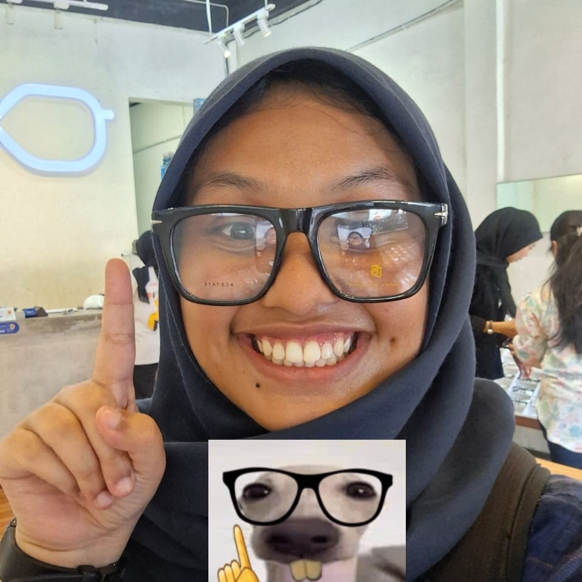
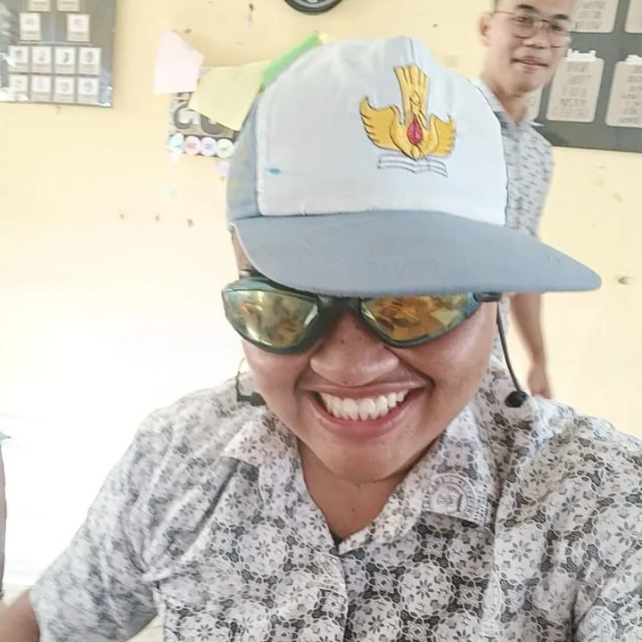
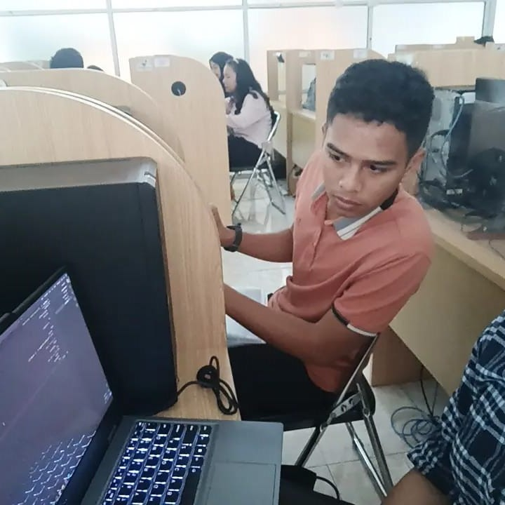

Pocut
Pocut adalah teman yang sudah saya anggap seperti mamak😍. Orang yang sangat mengayomi. Dan sangat-sangat dewasa

Tariq
Tariq sijago ngoding. Buktinya ada di foto tipal, disitu tipal lagi nyontek kodingan tariq. Orang aceh paling bucin yang saya kenal, mungkin karena kenalan orang aceh saya dikit😅.

Tiffal
Tipal, teman seperjuangan saya saat mencoba sekolah kedinasan. Sekarang tipal udah ga di sini. Semoga bahagia di sana Tipal🥺

Fazri
Pajri Si Organisasi. Salah satu teman saya yang paling sibuk kehidupan kampusnya. Semoga kuat dan badannya yak💪